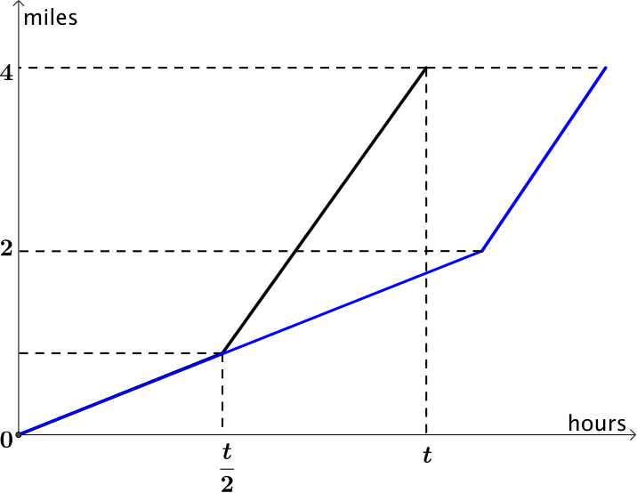

We have calculated two different average speeds. Often when people say ‘average’ they mean one particular type. Think about other averages you have met - do either of these two calculations remind you of averages you already know?
For equal distance spent at each speed
average speed=2146+162,
and for equal time spent at each speed
average speed=46+622.
When people say ‘the average’ they are usually saying ‘the mean’. You know there is more than one type of average, but informally using ‘the average’ is often acceptable.
However it might surprise you that even saying ‘the mean’ is not enough, as there is also more than one type of mean. The mean you are most familiar with is actually called the ‘arithmetic mean’.
arithmetic mean of x1, ..., xn is 1n(x1+x2+⋯+xn).
You may have spotted that when finding the average for equal times, we arrived at
46+622,
which is the arithmetic mean of 46 and 62.
What is probably less familiar is the scenario of equal distance which led to
There are three means known as Pythagorean means, which are the arithmetic mean, the harmonic mean and the geometric mean. For positive numbers x1, …, xn, these are given by
Let us make our driving examples more general. We already know that the distance does not affect the means when we are driving for an equal time or an equal distance.
If we make the speeds u and v, what is the average speed when driving an equal time at each speed?
u=d1t and v=d2t,
so the average speed would be
d1+d22t=ut+vt2t=u+v2,
which is our arithmetic mean of u and v.
If our speeds remain u and v, what is the average speed when each is driven for an equal distance?
This time
u=dt1 and v=dt2,
so the average speed would be
2dt1+t2=2ddu+dv=21u+1v,
which is the harmonic mean of u and v, and can also be written in the form
2uvu+v.
Will one of the averages always be bigger than the other?
In which of the situations do you spend the longest time at the faster speed?

We can see from the graph that travelling for an equal length of time at both speeds means that you spend longer travelling at the higher speed than when you travel an equal distance at both speeds. Therefore you will cover the distance in a quicker time and have a greater average speed.
We can also prove this algebraically. If we subtract the harmonic mean (equal distance), away from the arithmetic mean (equal time), we get
u+v2−2uvu+v=u2+v2+2uv−4uv2(u+v).
If we then simplify the numerator we have
u2−2uv+v22(u+v),
which can be factorised to
(u−v)22(u+v).
The numerator will never be negative as it is squared, and the denominator will always be positive as u and v are always positive. Therefore
(u−v)22(u+v)≥0.
So the average speed when driving for equal time will always be greater than or equal to the average speed when driving for equal distances.
The result in the question above generalises to more than two speeds. In fact the harmonic mean is always less than or equal to the geometric mean, which is always less than or equal to the arithmetic mean for the same set of positive numbers.
The part of this result that is used the most often only involves the arithmetic and geometric means.
1n(x1+x2+...+xn)≥()x1x2...xn⎯⎯⎯⎯⎯⎯⎯⎯⎯⎯⎯⎯⎯⎯⎯√n
This is more commonly known as the AM-GM inequality, and appears more regularly than you might think. You might like to try this review question or this one that it appears in.
Let us now think about a type of question you may well have seen before.
If the (arithmetic) mean height of a class of 30 pupils is 1.24m, and the mean height of a class of 20 pupils is 1.42m, what is the mean height of all the pupils?
What is the total height of all 50 pupils?
We cannot just take the mean of 1.24 and 1.42 as they are unequally weighted.
One way is to work out the total height of each class.
The class with 30 pupils has a total height of 30×1.24=37.2m.
The class with 20 pupils has a total height of 20×1.42=28.4m.
So the average height of all 50 pupils is
30×1.24+20×1.4250=1.312m
A different way of thinking about it is the proportion each class contributes to the average. The class with 30 pupils accounts for 35 of the total and so we could write the calculation
average height=35×1.24+25×1.42.
This is what we call a weighted arithmetic mean, as the two different heights are contributing unequal amounts to the mean.
Now let us consider a car travelling at a speed u for a time t1 and then travelling at speed v for time t2. What is its average speed?
We have
u=d1t1 and v=d2t2,
so the average speed is given by
d1+d2t1+t2.
If we rearrange the formulae for u and v to get them in terms of d1 and d2 then we can substitute these into the formala for average speed to get
ut1+vt2t1+t2,
which can be written as
t1t1+t2×u+t2t1+t2×v,
which is a weighted arithmetic mean, where we are taking the proportion of time that has been travelled at each speed into account.
From this general case we can return to our special case of equal times.
If you make t1=t2, can you show the formula simplifies to the arithmetic mean?
If you start again, you can rearrange the formulae for u and v to get them in terms of t1 and t2, and so get a formula for average speed in terms of u, v, d1 and d2 that is a weighted harmonic mean. Can you return to our special case of equal distances from your formula?